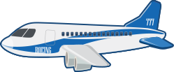
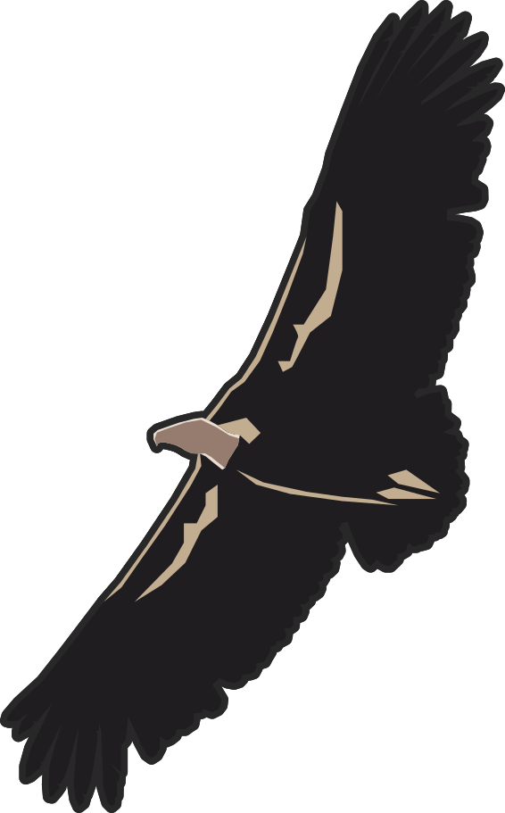
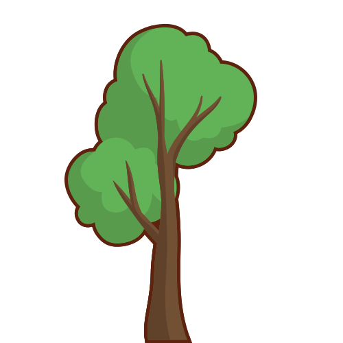
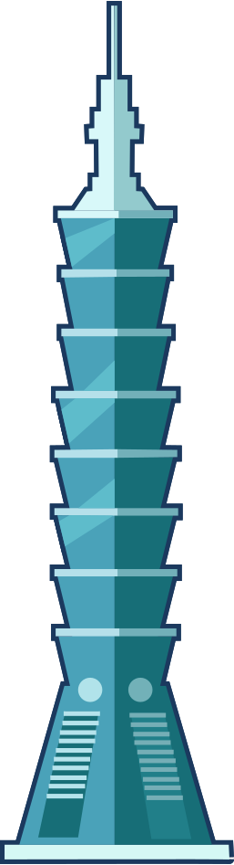
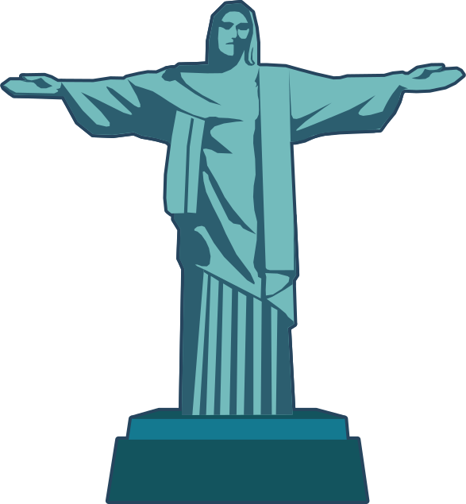

How High
We Are
Let's Go
    
{{title}}
{{realDefinition}}
close
นายภาสกร นุชิตขจรวุฒิ 61070164
นายศุภกร รุ่งเกตุ 61070223
นางสาวศุภิสรา ชีวนันทพร 61070230
นายอนุชา เว่ย 61070257
นางสาวอัญชิษฐา บุญณะสิทธิ์ 61070265
close
{{s.name}}
{{s.info}}